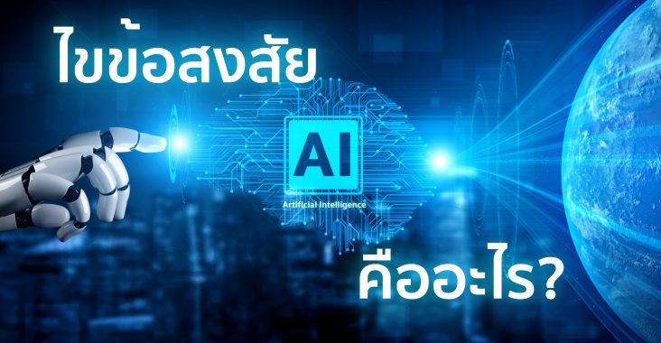
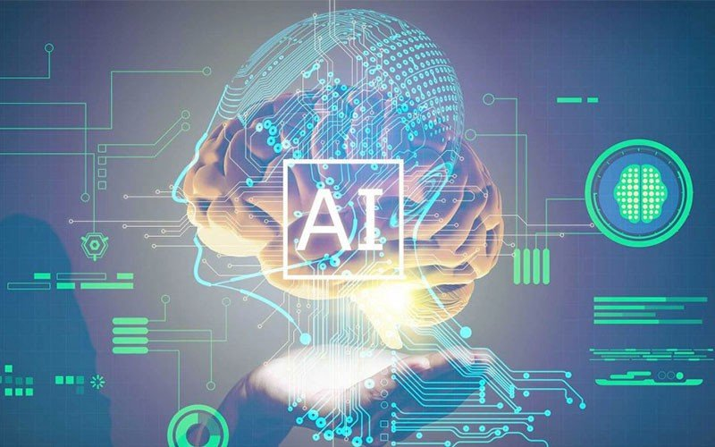
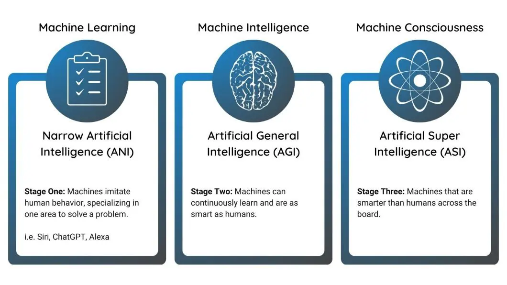

AI คืออะไร จุดประสงค์ของการใช้งานคืออะไร มีกี่ประเภท

Highlight
- AI ย่อมาจาก Artificial Intelligence
- จุดประสงค์หลักของการใช้เทคโนโลยี AI ก็เพื่อเพิ่มประสิทธิภาพในกระบวนการทำงาน
- 3 ประเภทของ AI(ANI, AGI, and ASI )
สารบัญบทความ
ปัญญาประดิษฐ์ (AI) คืออะไร?

AI ย่อมาจาก Artificial Intelligence คือ โปรแกรมคอมพิวเตอร์ที่มีฟังก์ชันที่สามารถทำงานได้เหมือนกับมนุษย์ และสามารถเลียนแบบการทำกิจกรรมของมนุษย์ได้ เช่น การเรียนรู้ การวางแผน และการแก้ไขปัญหาต่างๆ เป็นตัวช่วยมนุษย์ในการคิด ซึ่งจะเน้นไปในเรื่องของการประมวลผล และวิเคราะห์ข้อมูลต่างๆ เพราะ AI สามารถทำงานได้รวดเร็วกว่าสมองของมนุษย์ แต่ในขณะเดียวกัน AI ยังไม่สามารถทำหน้าที่ที่ต้องใช้ประสาทสัมผัสได้
จุดประสงค์ของการใช้งานเทคโนโลยี AI
ระบบ AI มีความสามารถหลากหลายในการใช้งานกับธุรกิจและอุตสาหกรรม ซึ่งจุดประสงค์หลักของการใช้เทคโนโลยี AI ก็เพื่อเพิ่มประสิทธิภาพในกระบวนการทำงาน ช่วยวิเคราะห์และประมวลผลข้อมูลจำนวนมากมายได้อย่างง่ายดาย และรวดเร็ว เพื่อดึงข้อมูลเชิงลึกมาใช้กับธุรกิจ และอุตสาหกรรมได้อย่างแม่นยำ
นอกจากนี้ เทคโนโลยี AI ยังช่วยลดความผิดพลาดในการทำงานที่อาจเกิดขึ้นได้ รวมไปถึงใช้ค้นหาพฤติกรรมของผู้บริโภคที่ได้จาดชุดข้อมูลที่มี เพื่อยกระดับให้ธุรกิจ หรืออุตสาหกรรมมีศักยภาพที่แข็งแกร่งในการแข่งขันให้ธุรกิจเติบโตได้ในระยะยาว
ประเภทขของ AI

1. Narrow AI (ANI) หรือ Weak AI
- เป็น AI ที่ออกแบบมาเพื่อทำงานเฉพาะด้านในขอบเขตที่จำกัด โดยมีความชำนาญสูงในงานนั้นๆ
- ตัวอย่างเช่น ระบบเล่นหมากรุก ระบบแนะนำสินค้า หรือระบบประมวลผลภาษาธรรมชาติ เป็นต้น
- ANI จะทำงานได้ดีภายใต้เงื่อนไขและข้อจำกัดที่กำหนดไว้ ไม่สามารถนำไปใช้กับงานอื่นที่นอกเหนือจากนั้นได้
- ข้อดีของ ANI คือช่วยเพิ่มประสิทธิภาพ ลดต้นทุน และช่วยในการตัดสินใจ จากการวิเคราะห์ข้อมูลจำนวนมาก
- ปัจจุบัน ANI ถูกใช้กันอย่างแพร่หลายในหลายอุตสาหกรรม ตั้งแต่การดูแลสุขภาพ การเงิน การผลิต ไปจนถึงการบริการลูกค้า
2. General AI (AGI) หรือ Strong AI
- เป็น AI ที่มีความสามารถระดับเดียวกับมนุษย์ สามารถเรียนรู้ เข้าใจ คิดวิเคราะห์ และแก้ปัญหาได้หลากหลายแบบ
- AGI ไม่ได้ถูกจำกัดอยู่แค่งานเฉพาะทาง แต่สามารถปรับตัวและประยุกต์ใช้กับงานหรือสถานการณ์ใหม่ๆ ได้
- ในทางทฤษฎี AGI สามารถทำทุกอย่างที่มนุษย์ทำได้ รวมถึงการคิดสร้างสรรค์ การวางแผน และการเรียนรู้ด้วยตนเอง
- อย่างไรก็ตาม ปัจจุบันเรายังไม่มีระบบ AGI ที่สมบูรณ์แบบ แม้จะมีความพยายามวิจัยและพัฒนาอย่างต่อเนื่อง
- คาดว่าในอนาคต ความก้าวหน้าทางเทคโนโลยีจะช่วยให้เราสามารถพัฒนา AGI ให้เป็นจริงได้ในที่สุด
3. Superintelligence AI (ASI)
- เป็น AI ที่มีความสามารถเหนือกว่ามนุษย์ในทุกด้าน ทั้งความฉลาดทางสติปัญญา ความคิดสร้างสรรค์ การแก้ปัญหา และอื่นๆ
- ASI จะสามารถประมวลผลข้อมูลได้รวดเร็วกว่าสมองมนุษย์หลายล้านเท่า และคิดค้นวิธีแก้ปัญหาที่มนุษย์นึกไม่ถึง
- นอกจากความฉลาดที่เหนือกว่าแล้ว ASI อาจมีสำนึกรู้ตัว เข้าใจอารมณ์ความรู้สึก และมีประสบการณ์เฉกเช่นมนุษย์
- เช่นเดียวกับ AGI ตอนนี้เรายังไม่มี ASI และยากที่จะคาดเดาว่าจะเกิดขึ้นได้เมื่อใด
- แต่นักวิทยาศาสตร์และนักปรัชญาหลายคนเชื่อว่า ASI จะถือกำเนิดขึ้นได้ในอนาคต ซึ่งจะส่งผลกระทบมหาศาลต่อวิถีชีวิตมนุษย์และอนาคตของอารยธรรม
วิดีโออธิบายเกี่ยวกับ AI
Watch full video on Youtube